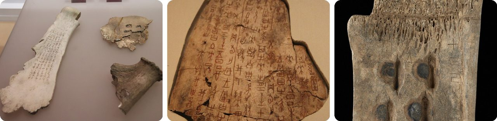
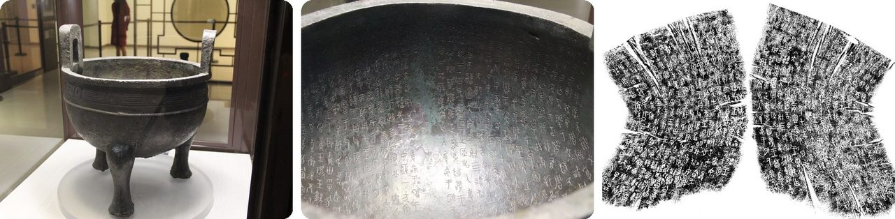
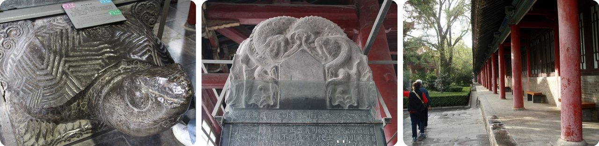
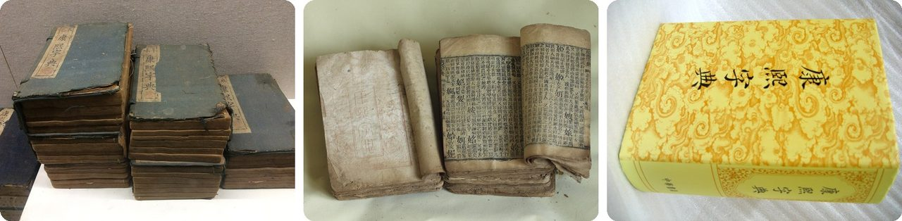
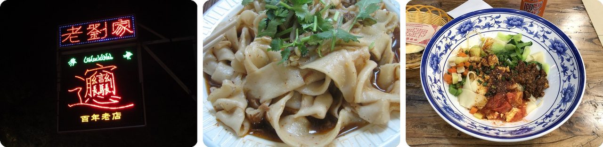
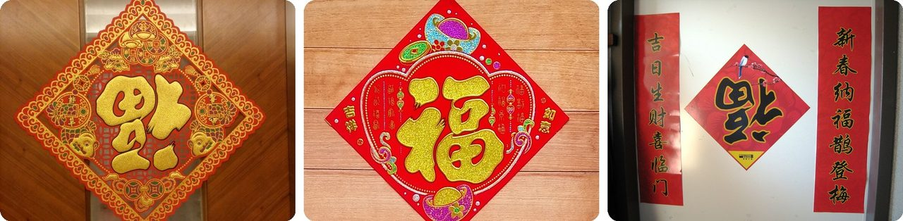
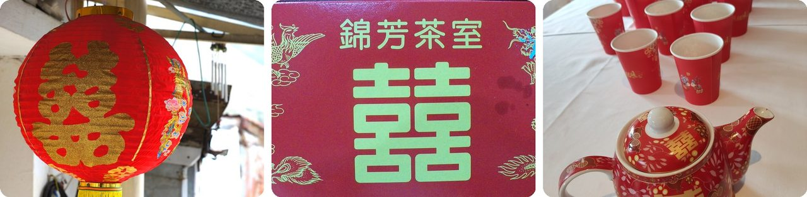
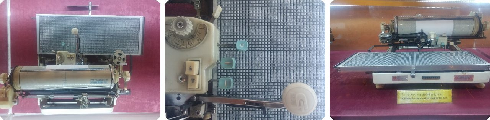
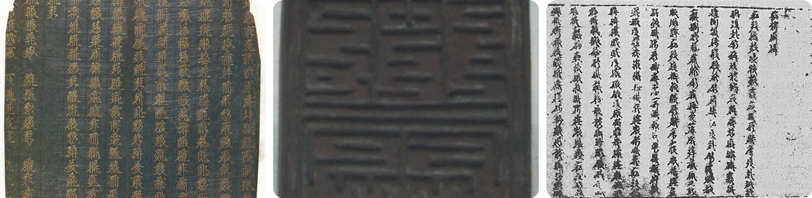
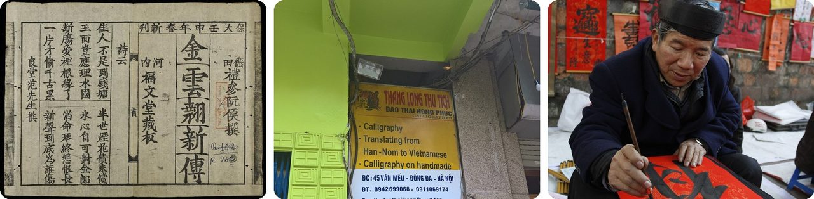

🌍 Top 10 Chinese Characters
Sep 30, 2026
1. 🐢 China's oldest writing was carved on turtle shells and bones

More than 3,000 years ago, Shang dynasty kings asked their ancestors questions using bones. Priests held ox shoulder blades and the flat underside of turtle shells to a flame.
The heat made the bones crack, the pattern of cracks was read as the answer, and the writing was carved right into the bone. These "oracle bones" are the oldest known Chinese writing, with the earliest dated to around 1250 BC.
About 150,000 inscriptions have been dug up so far, most of them at Anyang in Henan. A scholar named Wang Yirong was the first to recognize them as ancient writing, in 1899.
Basically, it was a hotline to the ancestors, with the call log carved into the bone.
2. 🏺 A bronze pot holds a 500-character letter inside it

The Mao Gong ding is a three-legged bronze cauldron from the end of the Western Zhou dynasty, more than 2,700 years ago. Its inside is covered with 500 characters in 32 lines, the longest writing ever found on an ancient Chinese bronze.
The text records a king's orders to a nobleman, the Duke of Mao, and the gifts the king gave him. The duke made the pot to say thank you, for future generations to see.
It weighs 34.7 kg, about as much as a 10-year-old kid. Today it's one of the "three treasures" of the National Palace Museum in Taipei.
Think of it as a thank-you note cast in metal so it would never get lost.
3. 🇨🇳 A museum in Xi'an is a forest of stone books

Between 833 and 837, workers carved twelve classic Chinese books onto 114 stone slabs. Together they hold more than 650,000 characters. At 1,000 characters a day, you'd need almost two years to read them all.
In 1087 the slabs were moved to a school in what is now Xi'an. That collection grew into the Stele Forest, a museum with nearly 3,000 carved stone tablets.
In other words, it's a library where every book is a slab of rock.
4. 🇨🇳 An emperor's dictionary listed more than 47,000 characters

In 1710 the Kangxi Emperor ordered a new dictionary to settle how every character should be written and said. It came out six years later, in 1716, with more than 47,000 characters.
For about 200 years it was the final word on written Chinese. But fewer than a quarter of its characters are in common use today.
Even emperors make typos: a review board published a list in 1831 fixing 2,588 mistakes.
It's like a phone book where three out of every four numbers no longer ring.
5. 🍜 One noodle's name takes 58 strokes to write

Biangbiang noodles from Shaanxi are wide, thick and hand-pulled, like a belt. Their name is written with one of the most complicated characters still in use: 58 strokes, or 42 in simplified Chinese.
It's built like a stack of smaller characters: "speak," "tiny," "horse," "grow," "moon," "heart," "knife," "cave" and "walk," all squeezed into one square. It isn't even in the Kangxi Dictionary.
There was no standard way to type it on a computer until March 2020, when it was finally added to Unicode.
Basically, it's a whole sentence crammed into a single square.
6. 🧧 Families hang the "luck" character upside down on purpose

At Chinese New Year, many homes put the character 福 (fú, good fortune) on their doors, often printed on a red diamond. Look closely and it's frequently upside down.
That's a pun. In Chinese, "upside down" (倒, dào) sounds just like "arrive" (到, dào). So "the fu is upside down" sounds like "good fortune has arrived."
One story says the custom began when a servant who couldn't read hung a prince's fu signs upside down. Another servant calmed the angry prince by pointing out the lucky pun.
Think of it as a joke you hang on your front door.
7. 💍 Weddings use a character made of two "joys" stuck together

The character 喜 (xǐ) means joy. At weddings you see 囍, "double happiness": two copies of 喜 squeezed side by side into the space of one character.
It's usually red or gold, and it shows up everywhere at a wedding: on decorations all over the ceremony and on gifts for the couple.
In other words, it's joy times two, in the space of one.
8. 🇨🇳 A Chinese typewriter needed a tray of 2,450 characters

An English typewriter needs a few dozen keys. Written Chinese uses thousands of characters, so one popular design used a flat tray holding 2,450 metal characters instead.
The typist picked a character from the tray and struck it against an ink ribbon onto the paper. An engineer named Zhou Houkun, who got the idea as a student at MIT, built a prototype in 1914, and it went into mass production in 1919.
Top speed was about 45 words a minute, compared with about 120 for a fast English typist. Typists rearranged their trays by job, since a police office used different words than a bank.
It's typing as a giant game of hide-and-seek.
9. 📜 A vanished kingdom invented its own Chinese-looking script

The Tangut people ruled the Western Xia kingdom in northwest China. In 1036 an official named Yeli Renrong designed them their own writing, now called Tangut script.
It looks like Chinese, with the same kinds of strokes, but it's built in a different way. None of its characters started as pictures, and two characters a stroke apart can mean completely different things.
About 5,863 Tangut characters are known today. After the kingdom fell, almost no one could read them.
It's a script that looks familiar until you try to read a single word.
10. 🇻🇳 Vietnam once wrote Vietnamese with Chinese-style characters

For centuries, Vietnamese writers used chữ Nôm. It mixed Chinese characters for borrowed words with many newly invented characters for native Vietnamese words.
That made it very hard: fewer than 5% of people knew written Chinese well enough to read it. Even so, Vietnam's most famous poem, The Tale of Kiều by Nguyễn Du, was written in chữ Nôm.
From the 1920s, a Latin alphabet first developed by Portuguese missionaries replaced it. Today chữ Nôm is mostly used for history and ceremonies.
Picture writing English in Chinese characters, then inventing new ones for every word that doesn't fit.
Fun fact
In the Stele Forest in Xi'an stands a stone carved in 781 with writing in both Chinese and Syriac, a language from the Middle East. It records that a Christian church, the Church of the East, was active in Tang dynasty China. So more than 1,200 years ago, Christians from western Asia had already made it to China. Next time: surprising travelers on the Silk Road.
Photo credits (Wikimedia Commons)
- #1: Shang Ox Scapula Oracle Bones 1.jpg by Gary Lee Todd, Ph.D. Complete indexed photo collection at WorldHistoryPics.com., CC0
- #1: Shang Inscribed Ox Scapula (for divination).jpg by unknown, CC0
- #1: Oracle bone from the Couling-Chalfant collection.jpg by anonymous, CC0
- #2: Bronze Mao Gong Ding, Late Western Zhou.jpg by Gary Todd, CC0
- #2: Bronze Mao Gong Ding, Late Western Zhou- Longest Bronze Inscription in the World a.jpg by Gary Todd, CC0
- #2: Mao Gong ding inscription.png by 陈介祺或其门人, Public domain
- #3: Beilin Stone Museum (9912718415).jpg by Gary Todd from Xinzheng, China, CC0
- #3: Beilin Stone Museum (9913373825).jpg by Gary Todd from Xinzheng, China, CC0
- #3: Xi'an beilin museum (4104930446).jpg by Hiroshi Miyazaki from Tokyo, Japan, CC BY 2.0
- #4: Kangxi Dictionary - Chinese Dictionary Museum 3.JPG by Underbar dk, CC BY-SA 4.0
- #4: Kangxi Dictionary 1827.JPG by Doctoroftcm, CC BY-SA 4.0
- #4: K'ang Hsi Dictionary.jpg by WikiCantona, CC BY-SA 3.0
- #5: Biangbiang noodles.jpg by 我乃野云鹤, CC BY-SA 4.0
- #5: Biang Biang Mian.jpg by Gary Soup, CC BY 2.0
- #5: Biang Biang Noodles at Qintangyizhan, Tianzhu, Beijing (20200412133323).jpg by N509FZ, CC BY-SA 4.0
- #6: 福字.jpg by Groupsevencityu, CC BY-SA 4.0
- #6: 斗方福字.jpg by Sean Chiu, CC BY-SA 4.0
- #6: Chinese New Year decorations 2005.jpg by Helanhuaren, CC BY-SA 3.0
- #7: Double Happiness Lantern.JPG by Mk2010, CC BY-SA 3.0
- #7: Cover of a Chinese wedding invitation card ..JPG by Mizzyjo, CC BY-SA 3.0
- #7: HK Wedding 新人敬茶 red cups 囍 tea pot kettle September 2022 Px3 03.jpg by COEBZTAFA lanmi MWIC, CC BY-SA 4.0
- #8: Chinese typewriter 05.jpg by MatejK42, CC BY-SA 4.0
- #8: Chinese typewriter detail.jpg by MatejK42, CC BY-SA 4.0
- #8: Chinese typewriter 03.jpg by MatejK42, CC BY-SA 4.0
- #9: Chrysographic Tangut Golden Light Sutra.jpg by BabelStone, Public domain
- #9: Xixia Museum Tangut Commander seal 04.jpg by BabelStone, CC0
- #9: The Art of War-Tangut script.jpg by Sun Tzu, Public domain
- #10: Kim Vân Kiều tân truyện.jpg by Nôm Foundation, Public domain
- #10: Vietnamese Nôm Calligraphic translators near the Temple of Literature (2017).jpg by Donald Trung, CC BY-SA 4.0
- #10: Van Mieu han tu 5412916981 273dedbe99.jpg by Tom Photographer, CC BY 2.0

.jpg){kind=link}


.jpg){kind=link}
.jpg){kind=link}
.jpg){kind=link}


.jpg){kind=link}


.jpg){kind=link}